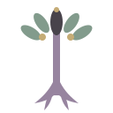

建木 · JIANMU

建木 · Jianmu《山海经·海内经》
有木，青叶紫茎，玄华黄实，名曰建木，百仞无枝，有九欘，下有九枸，其实如麻，其叶如芒。大皞爰过，黄帝所为。语言 · Language
从 0 到 B2 · From 0 to B2
待添加 · To Be Added
未来模块 · Future module

建木 · Jianmu有木，青叶紫茎，玄华黄实，名曰建木，百仞无枝，有九欘，下有九枸，其实如麻，其叶如芒。大皞爰过，黄帝所为。从 0 到 B2 · From 0 to B2
未来模块 · Future module